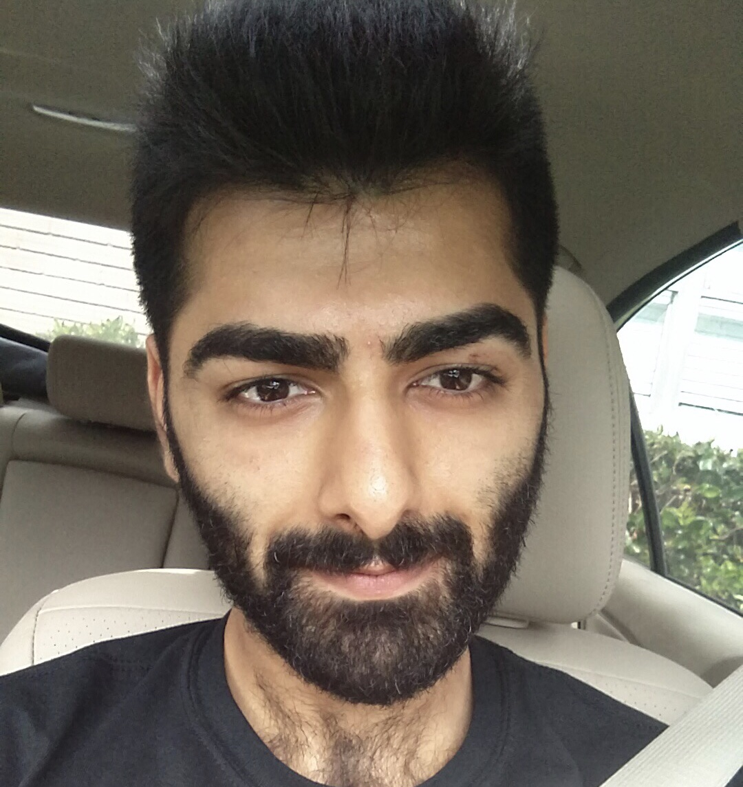

 Hello! My name is Ibrahim Iqbal. I was born in Lahore, Pakistan but moved to the states at a rather young age of 10. I've lived in Houston my entire life so far. I enjoy working out, hiking, programming, traveling and spending times with friends.
I've always found myself fascinated by the world of coding. It's something that is intuitive to me and not at the same time. I find myself attracted to the entirety of it; however, when the going gets tough, the difficulity of it deters me from flourishing as much as I know I would be able to.
This is why I've enrolled in the UT Programming Bootcamp! I feel as though the structure of the program will aid me in pushing through the difficulties of coding allowing me to become the coder I know I'm destined to be.